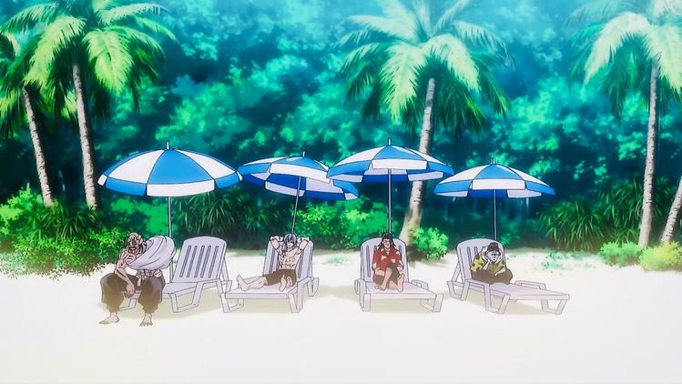

Descobrindo as praias do nordeste
Da Bahia ao Rio Grande do Norte, passando por Sergipe, Alagoas, Pernambuco, Paraíba, além do Ceará, Piauí e Maranhão: o que não faltam são faixas de areia maravilhosas e praias com as mais diversas características! Não há dúvidas que muitas das melhores praias do Brasil estão no Nordeste!
A região com o maior litoral em nosso país tem paisagens variadas, dunas, encontro de rios com o mar, falésias, piscinas naturais e maravilhosos pontos para mergulho, ricos em vida marinha.
